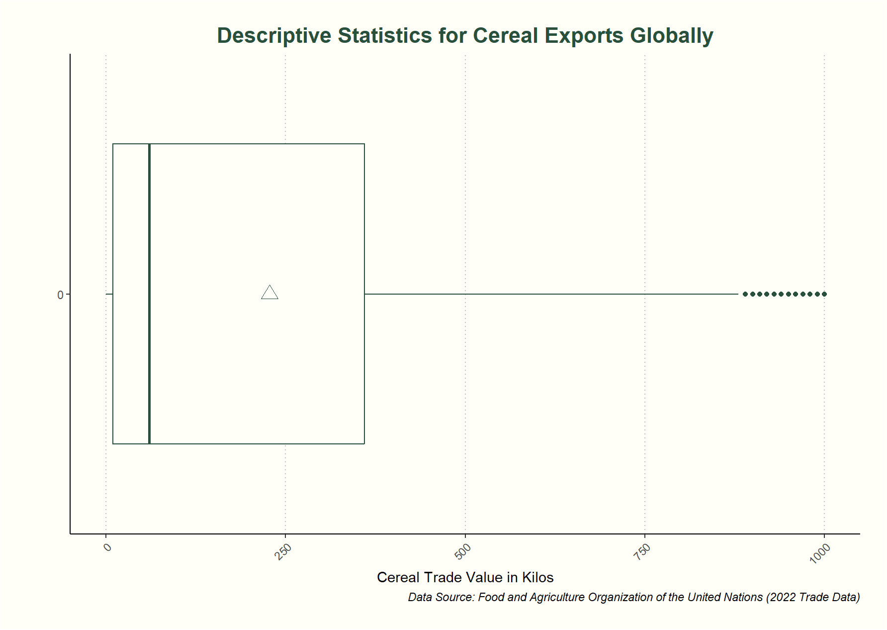

In a 2022 study by Grassia, et al. titled “Insights into countries’ exposure and vulnerability to food trade shocks from network-based simulations,” food shocks (defined as a 30% decrease in production) and their impact on every country involved in the “international food trade network” were measured in daily calories per person, a variable titled the “average demand deficit” (2022, pp. 1). This study specifically looked at every country's exposure to global shocks in production, the impact of regional production shocks on food insecure countries and countries with varying levels of income, and calculated the amount of emergency food storage needed per capita to outlast food shocks (Grassia et al, 2022, pp. 1-5). We are interested in this study’s spatial analysis of food production based on imports and exports.


Add text here